You can order print and ebook versions of Think Bayes 2e from Bookshop.org and Amazon.
Grid algorithms for hierarchical models#
It is widely believed that grid algorithms are only practical for models with 1-3 parameters, or maybe 4-5 if you are careful. I’ve said so myself.
But recently I used a grid algorithm to solve the emitter-detector problem, and along the way I noticed something about the structure of the problem: although the model has two parameters, the data only depend on one of them. That makes it possible to evaluate the likelihood function and update the model very efficiently.
Many hierarchical models have a similar structure: the data depend on a small number of parameters, which depend on a small number of hyperparameters. I wondered whether the same method would generalize to more complex models, and it does.
As an example, in this notebook I’ll use a logitnormal-binomial hierarchical model to solve a problem with two hyperparameters and 13 parameters. The grid algorithm is not just practical; it’s substantially faster than MCMC.
The following are some utility functions I’ll use.
import matplotlib.pyplot as plt
def legend(**options):
"""Make a legend only if there are labels."""
handles, labels = plt.gca().get_legend_handles_labels()
if len(labels):
plt.legend(**options)
def decorate(**options):
plt.gca().set(**options)
legend()
plt.tight_layout()
from empiricaldist import Cdf
def compare_cdf(pmf, sample):
pmf.make_cdf().plot(label='grid')
Cdf.from_seq(sample).plot(label='mcmc')
print(f'grid {pmf.mean():.4f}, mcmc {float(sample.mean()):.4f}')
decorate()
from empiricaldist import Pmf
def make_pmf(ps, qs, name):
pmf = Pmf(ps, qs)
pmf.normalize()
pmf.index.name = name
return pmf
Heart Attack Data#
The problem I’ll solve is based on Chapter 10 of Probability and Bayesian Modeling; it uses data on death rates due to heart attack for patients treated at various hospitals in New York City.
We can use Pandas to read the data into a DataFrame.
import os
filename = 'DeathHeartAttackManhattan.csv'
if not os.path.exists(filename):
!wget https://github.com/AllenDowney/BayesianInferencePyMC/raw/main/DeathHeartAttackManhattan.csv
import pandas as pd
df = pd.read_csv(filename)
df
| Hospital | Cases | Deaths | Death % | |
|---|---|---|---|---|
| 0 | Bellevue Hospital Center | 129 | 4 | 3.101 |
| 1 | Harlem Hospital Center | 35 | 1 | 2.857 |
| 2 | Lenox Hill Hospital | 228 | 18 | 7.894 |
| 3 | Metropolitan Hospital Center | 84 | 7 | 8.333 |
| 4 | Mount Sinai Beth Israel | 291 | 24 | 8.247 |
| 5 | Mount Sinai Hospital | 270 | 16 | 5.926 |
| 6 | Mount Sinai Roosevelt | 46 | 6 | 13.043 |
| 7 | Mount Sinai St. Luke’s | 293 | 19 | 6.485 |
| 8 | NYU Hospitals Center | 241 | 15 | 6.224 |
| 9 | NYP Hospital - Allen Hospital | 105 | 13 | 12.381 |
| 10 | NYP Hospital - Columbia Presbyterian Center | 353 | 25 | 7.082 |
| 11 | NYP Hospital - New York Weill Cornell Center | 250 | 11 | 4.400 |
| 12 | NYP/Lower Manhattan Hospital | 41 | 4 | 9.756 |
The columns we need are Cases, which is the number of patients treated at each hospital, and Deaths, which is the number of those patients who died.
data_ns = df['Cases'].values
data_ks = df['Deaths'].values
Solution with PyMC#
Here’s a hierarchical model that estimates the death rate for each hospital and simultaneously estimates the distribution of rates across hospitals.
Saying that x has a logit-normal distribution is the same as saying that
logit(x) is normal, so we can write each rate as
where each \(u_i\) is a standard normal variate.
Writing it this way is called a non-centered parameterization, and it samples
much better than declaring xs to be logit-normal directly.
import pymc as pm
def make_model():
with pm.Model() as model:
mu = pm.Normal('mu', 0, 2)
sigma = pm.HalfNormal('sigma', sigma=1)
us = pm.Normal('us', 0, 1, shape=len(data_ns))
xs = pm.Deterministic('xs', pm.math.invlogit(mu + sigma * us))
ks = pm.Binomial('ks', n=data_ns, p=xs, observed=data_ks)
return model
model = make_model()
pm.model_to_graphviz(model)
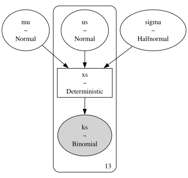
with model:
pred = pm.sample_prior_predictive(10000, random_seed=42)
idata = pm.sample(1000, random_seed=42)
Sampling: [ks, mu, sigma, us]
Initializing NUTS using jitter+adapt_diag...
Multiprocess sampling (4 chains in 4 jobs)
NUTS: [mu, sigma, us]
Sampling 4 chains for 1_000 tune and 1_000 draw iterations (4_000 + 4_000 draws total) took 3 seconds.
There were 2 divergences after tuning. Increase `target_accept` or reparameterize.
PyMC returns a DataTree with the samples indexed by chain and draw.
az.extract stacks those two dimensions into a single sample dimension, which is more convenient here.
import arviz as az
post = az.extract(idata)
prior_sample = az.extract(pred, group='prior')
Here are the posterior distributions of the hyperparameters.
az.plot_dist(idata, var_names=['mu', 'sigma'])
<arviz_plots.plot_collection.PlotCollection at 0x7fb5b38c9850>
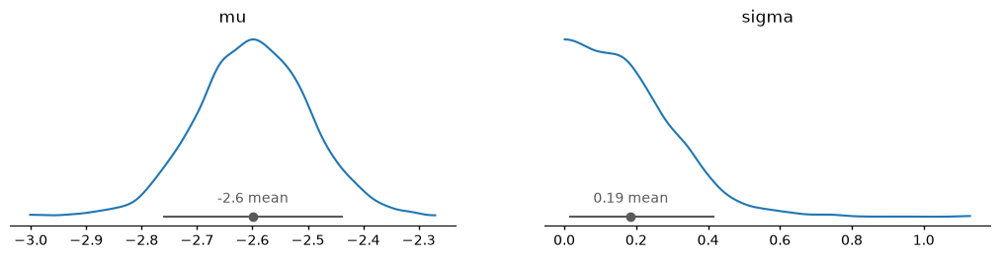
And we can extract the posterior distributions of the xs, with one row per hospital.
post_xs = post['xs']
post_xs.shape
(13, 4000)
As an example, here’s the posterior distribution of x for the first hospital.
Cdf.from_seq(post_xs[0]).plot()
decorate(title='Posterior distribution of x for the first hospital',
xlabel='Death rate', ylabel='CDF')
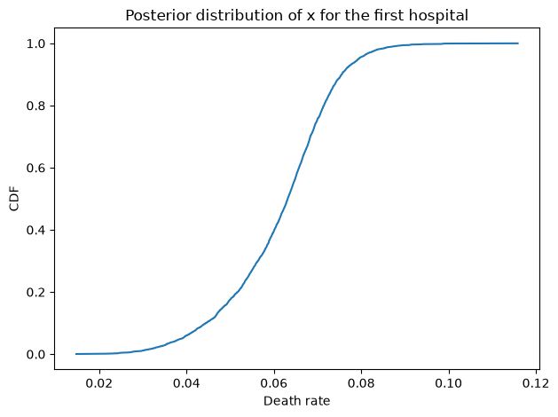
The grid priors#
Now let’s solve the same problem using a grid algorithm. I’ll use the same priors for the hyperparameters, approximated by a grid with about 100 elements in each dimension.
import numpy as np
from scipy.stats import norm
mus = np.linspace(-6, 6, 101)
ps = norm.pdf(mus, 0, 2)
prior_mu = make_pmf(ps, mus, 'mu')
prior_mu.plot()
decorate(title='Prior distribution of mu')
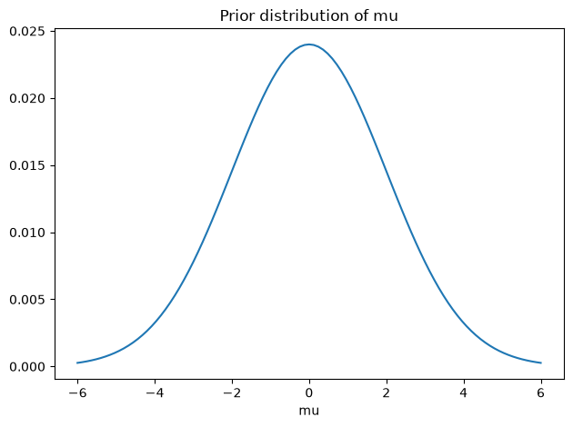
from scipy.stats import logistic
sigmas = np.linspace(0.001, 3.6, 100)
ps = norm.pdf(sigmas, 0, 1)
prior_sigma = make_pmf(ps, sigmas, 'sigma')
prior_sigma.plot()
decorate(title='Prior distribution of sigma')
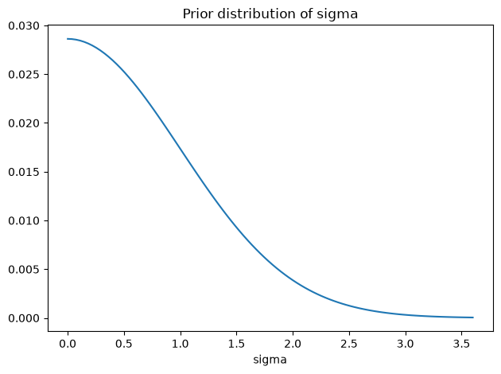
The grid for sigma has to start above 0, because the distribution of x
is undefined if sigma is 0.
But it should start close to 0: with only 13 hospitals, the data are
consistent with a small variation between them, so the posterior distribution
of sigma has non-negligible mass near 0.
The following cells confirm that these priors are consistent with the prior samples from PyMC.
compare_cdf(prior_mu, prior_sample['mu'])
decorate(title='Prior distribution of mu')
grid 0.0000, mcmc -0.0112
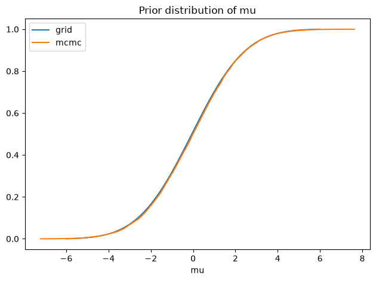
compare_cdf(prior_sigma, prior_sample['sigma'])
decorate(title='Prior distribution of sigma')
grid 0.7861, mcmc 0.7978
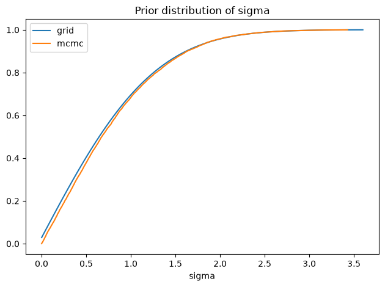
The joint distribution of hyperparameters#
I’ll use make_joint to make an array that represents the joint prior distribution of the hyperparameters.
def make_joint(prior_x, prior_y):
X, Y = np.meshgrid(prior_x.ps, prior_y.ps, indexing='ij')
hyper = X * Y
return hyper
prior_hyper = make_joint(prior_mu, prior_sigma)
prior_hyper.shape
(101, 100)
Here’s what it looks like.
import pandas as pd
from utils import plot_contour
plot_contour(pd.DataFrame(prior_hyper, index=mus, columns=sigmas))
decorate(title="Joint prior of mu and sigma")
Joint prior of hyperparameters and x#
Now we’re ready to lay out the grid for x, which is the proportion we’ll estimate for each hospital.
xs = np.linspace(0.01, 0.99, 295)
For each pair of hyperparameters, we’ll compute the distribution of x.
If x has a logit-normal distribution, logit(x) has a normal distribution.
But the grid is laid out in equal steps of x, not logit(x), so to get a density with respect to x we have to include the derivative of the transformation,
Without this factor, the distribution we compute is not logit-normal, and the error is larger when sigma is larger.
from scipy.special import logit
M, S, X = np.meshgrid(mus, sigmas, xs, indexing='ij')
LO = logit(X)
jacobian = 1 / (X * (1-X))
LO.sum()
np.float64(-7.300684501387877e-10)
from scipy.stats import norm
%time normpdf = norm.pdf(LO, M, S) * jacobian
normpdf.sum()
CPU times: user 111 ms, sys: 256 ms, total: 368 ms
Wall time: 369 ms
np.float64(2238057.638528603)
We can speed this up by skipping the terms that don’t depend on x
%%time
z = (LO-M) / S
normpdf = np.exp(-z**2/2) * jacobian
CPU times: user 49.7 ms, sys: 197 μs, total: 49.9 ms
Wall time: 49.6 ms
The result is a 3-D array with axes for mu, sigma, and x.
Now we need to normalize each distribution of x.
totals = normpdf.sum(axis=2)
totals.shape
(101, 100)
To normalize, we have to use a safe version of divide where 0/0 is 0.
def divide(x, y):
out = np.zeros_like(x)
return np.divide(x, y, out=out, where=(y!=0))
shape = totals.shape + (1,)
normpdf = divide(normpdf, totals.reshape(shape))
normpdf.shape
(101, 100, 295)
The result is an array that contains the distribution of x for each pair of hyperparameters.
Now, to get the prior distribution, we multiply through by the joint distribution of the hyperparameters.
def make_prior(hyper):
# reshape hyper so we can multiply along axis 0
shape = hyper.shape + (1,)
prior = normpdf * hyper.reshape(shape)
return prior
%time prior = make_prior(prior_hyper)
prior.sum()
CPU times: user 9.73 ms, sys: 4.21 ms, total: 13.9 ms
Wall time: 13.8 ms
np.float64(0.9987920932661827)
The result is a 3-D array that represents the joint prior distribution of mu, sigma, and x.
To check that it is correct, I’ll extract the marginal distributions and compare them to the priors.
def marginal(joint, axis):
axes = [i for i in range(3) if i != axis]
total = joint.sum(axis=tuple(axes))
return total / total.sum()
prior_mu.plot()
marginal_mu = Pmf(marginal(prior, 0), mus)
marginal_mu.plot()
decorate(title='Checking the marginal distribution of mu')
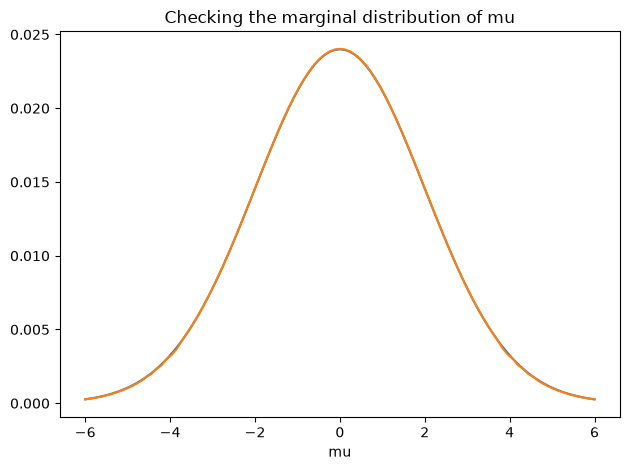
prior_sigma.plot()
marginal_sigma = Pmf(marginal(prior, 1), sigmas)
marginal_sigma.plot()
decorate(title='Checking the marginal distribution of sigma')
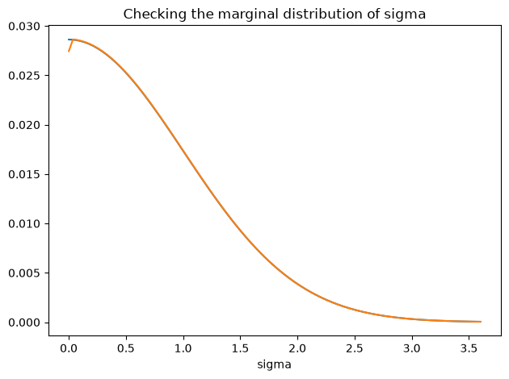
We didn’t compute the prior distribution of x explicitly; it follows from the distribution of the hyperparameters. But we can extract the prior marginal of x from the joint prior.
marginal_x = Pmf(marginal(prior, 2), xs)
marginal_x.plot()
decorate(title='Checking the marginal distribution of x',
ylim=[0, np.max(marginal_x) * 1.05])
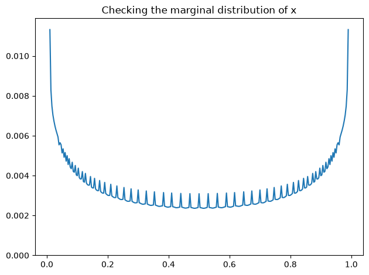
And compare it to the prior sample from PyMC.
pred_xs = prior_sample['xs']
pred_xs.shape
(13, 10000)
compare_cdf(marginal_x, pred_xs[0])
decorate(title='Prior distribution of x')
grid 0.5000, mcmc 0.4978
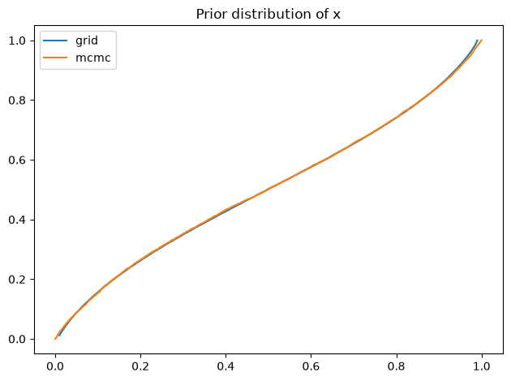
The distributions agree, which confirms that the grid represents the same prior as the PyMC model.
An earlier version of this notebook left out the Jacobian factor, and the prior from the grid was noticeably different from the prior from PyMC.
It made little difference to the posteriors in this example, because the posterior distribution of sigma is small and the factor is nearly constant over a narrow range of x.
But it is wrong in general, and the discrepancy grows with sigma.
In addition to the marginals, we’ll also find it useful to extract the joint marginal distribution of the hyperparameters.
def get_hyper(joint):
return joint.sum(axis=2)
hyper = get_hyper(prior)
plot_contour(pd.DataFrame(hyper,
index=mus,
columns=sigmas))
decorate(title="Joint prior of mu and sigma")
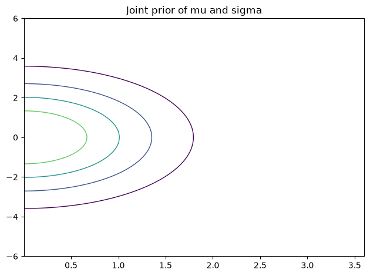
The Update#
The likelihood of the data only depends on x, so we can compute it like this.
from scipy.stats import binom
data_k = data_ks[0]
data_n = data_ns[0]
like_x = binom.pmf(data_k, data_n, xs)
like_x.shape
(295,)
plt.plot(xs, like_x)
decorate(title='Likelihood of the data')
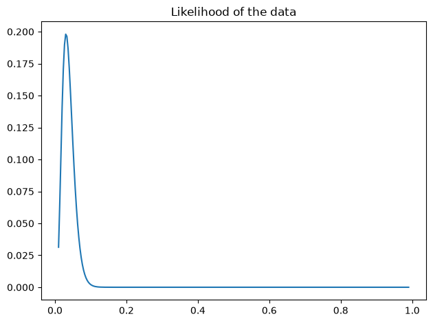
And here’s the update.
def update(prior, data):
n, k = data
like_x = binom.pmf(k, n, xs)
posterior = prior * like_x
posterior /= posterior.sum()
return posterior
data = data_n, data_k
%time posterior = update(prior, data)
CPU times: user 8.85 ms, sys: 56.1 ms, total: 65 ms
Wall time: 65.1 ms
Serial updates#
At this point we can do an update based on a single hospital, but how do we update based on all of the hospitals?
As a step toward the right answer, I’ll start with a wrong answer, which is to do the updates one at a time.
After each update, we extract the posterior distribution of the hyperparameters and use it to create the prior for the next update.
At the end, the posterior distribution of hyperparameters is correct, and the marginal posterior of x for the last hospital is correct, but the other marginals are wrong because they do not take into account data from subsequent hospitals.
def multiple_updates(prior, ns, ks):
for data in zip(ns, ks):
print(data)
posterior = update(prior, data)
hyper = get_hyper(posterior)
prior = make_prior(hyper)
return posterior
%time posterior = multiple_updates(prior, data_ns, data_ks)
(np.int64(129), np.int64(4))
(np.int64(35), np.int64(1))
(np.int64(228), np.int64(18))
(np.int64(84), np.int64(7))
(np.int64(291), np.int64(24))
(np.int64(270), np.int64(16))
(np.int64(46), np.int64(6))
(np.int64(293), np.int64(19))
(np.int64(241), np.int64(15))
(np.int64(105), np.int64(13))
(np.int64(353), np.int64(25))
(np.int64(250), np.int64(11))
(np.int64(41), np.int64(4))
CPU times: user 220 ms, sys: 88.1 ms, total: 308 ms
Wall time: 307 ms
Here are the posterior distributions of the hyperparameters, compared to the results from PyMC.
marginal_mu = Pmf(marginal(posterior, 0), mus)
compare_cdf(marginal_mu, post['mu'])
grid -2.6006, mcmc -2.5992
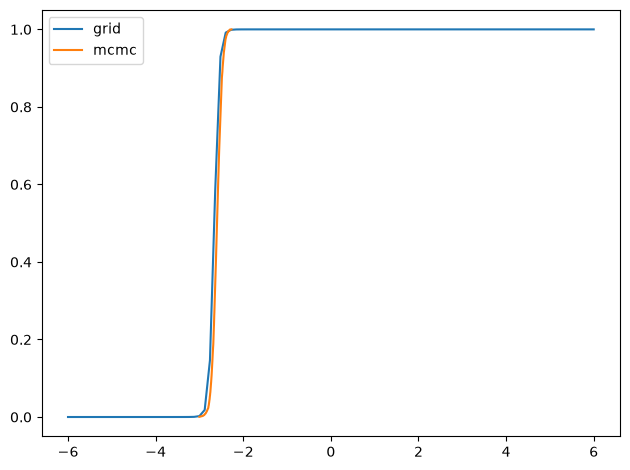
marginal_sigma = Pmf(marginal(posterior, 1), sigmas)
compare_cdf(marginal_sigma, post['sigma'])
grid 0.1764, mcmc 0.1851
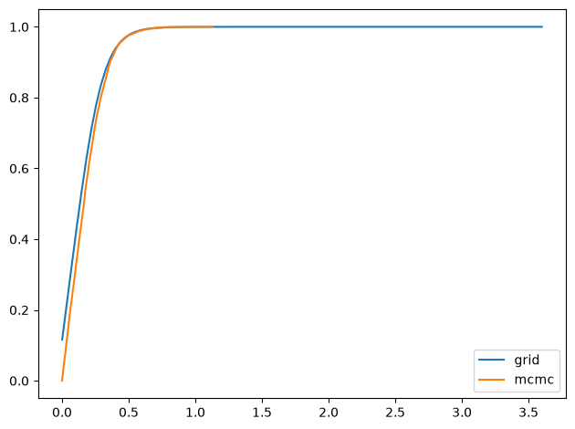
marginal_x = Pmf(marginal(posterior, 2), xs)
compare_cdf(marginal_x, post_xs[-1])
grid 0.0730, mcmc 0.0736
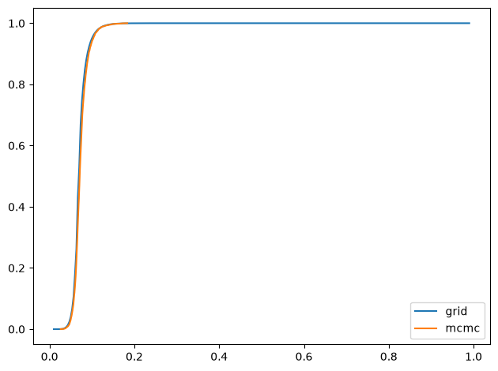
Parallel updates#
Doing updates one at time is not quite right, but it gives us an insight.
Suppose we start with a uniform distribution for the hyperparameters and do an update with data from one hospital. If we extract the posterior joint distribution of the hyperparameters, what we get is the likelihood function associated with one dataset.
The following function computes these likelihood functions and saves them in an array called hyper_likelihood.
def compute_hyper_likelihood(ns, ks):
shape = ns.shape + mus.shape + sigmas.shape
hyper_likelihood = np.empty(shape)
for i, data in enumerate(zip(ns, ks)):
print(data)
n, k = data
like_x = binom.pmf(k, n, xs)
posterior = normpdf * like_x
hyper_likelihood[i] = get_hyper(posterior)
return hyper_likelihood
%time hyper_likelihood = compute_hyper_likelihood(data_ns, data_ks)
(np.int64(129), np.int64(4))
(np.int64(35), np.int64(1))
(np.int64(228), np.int64(18))
(np.int64(84), np.int64(7))
(np.int64(291), np.int64(24))
(np.int64(270), np.int64(16))
(np.int64(46), np.int64(6))
(np.int64(293), np.int64(19))
(np.int64(241), np.int64(15))
(np.int64(105), np.int64(13))
(np.int64(353), np.int64(25))
(np.int64(250), np.int64(11))
(np.int64(41), np.int64(4))
CPU times: user 100 ms, sys: 56.1 ms, total: 157 ms
Wall time: 156 ms
We can multiply this out to get the product of the likelihoods.
%time hyper_likelihood_all = hyper_likelihood.prod(axis=0)
hyper_likelihood_all.sum()
CPU times: user 269 μs, sys: 0 ns, total: 269 μs
Wall time: 188 μs
np.float64(1.993026477324302e-14)
This is useful because it provides an efficient way to compute the marginal posterior distribution of x for any hospital.
Here’s an example.
i = 3
data = data_ns[i], data_ks[i]
data
(np.int64(84), np.int64(7))
Suppose we did the updates serially and saved this hospital for last.
The prior distribution for the final update would reflect the updates from all previous hospitals, which we can compute by dividing out hyper_likelihood[i].
%time hyper_i = divide(prior_hyper * hyper_likelihood_all, hyper_likelihood[i])
hyper_i.sum()
CPU times: user 283 μs, sys: 0 ns, total: 283 μs
Wall time: 202 μs
np.float64(4.6946607700275136e-17)
We can use hyper_i to make the prior for the last update.
prior_i = make_prior(hyper_i)
And then do the update.
posterior_i = update(prior_i, data)
And we can confirm that the results are similar to the results from PyMC.
marginal_mu = Pmf(marginal(posterior_i, 0), mus)
marginal_sigma = Pmf(marginal(posterior_i, 1), sigmas)
marginal_x = Pmf(marginal(posterior_i, 2), xs)
compare_cdf(marginal_mu, post['mu'])
grid -2.6006, mcmc -2.5992
compare_cdf(marginal_sigma, post['sigma'])
grid 0.1764, mcmc 0.1851
compare_cdf(marginal_x, post_xs[i])
grid 0.0722, mcmc 0.0723
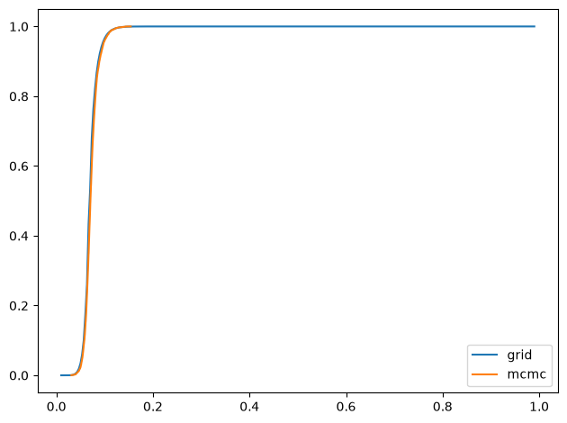
Compute all marginals#
The following function computes the marginals for all hospitals and stores the results in an array.
def compute_all_marginals(ns, ks):
shape = len(ns), len(xs)
marginal_xs = np.zeros(shape)
numerator = prior_hyper * hyper_likelihood_all
for i, data in enumerate(zip(ns, ks)):
hyper_i = divide(numerator, hyper_likelihood[i])
prior_i = make_prior(hyper_i)
posterior_i = update(prior_i, data)
marginal_xs[i] = marginal(posterior_i, 2)
return marginal_xs
%time marginal_xs = compute_all_marginals(data_ns, data_ks)
CPU times: user 235 ms, sys: 88 ms, total: 323 ms
Wall time: 324 ms
Here’s what the results look like, compared to the results from PyMC.
for i, ps in enumerate(marginal_xs):
pmf = Pmf(ps, xs)
plt.figure()
compare_cdf(pmf, post_xs[i])
decorate(title=f'Posterior marginal of x for Hospital {i}',
xlabel='Death rate',
ylabel='CDF',
xlim=[post_xs[i].min(), post_xs[i].max()])
grid 0.0618, mcmc 0.0616
grid 0.0667, mcmc 0.0664
grid 0.0724, mcmc 0.0723
grid 0.0722, mcmc 0.0723
grid 0.0739, mcmc 0.0743
grid 0.0663, mcmc 0.0664
grid 0.0771, mcmc 0.0777
grid 0.0680, mcmc 0.0679
grid 0.0673, mcmc 0.0674
grid 0.0809, mcmc 0.0813
grid 0.0699, mcmc 0.0700
grid 0.0619, mcmc 0.0615
grid 0.0730, mcmc 0.0736
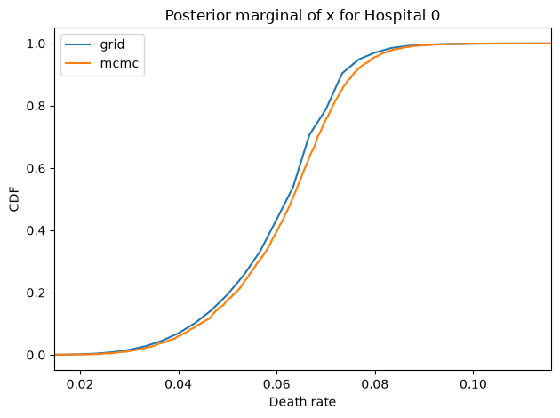
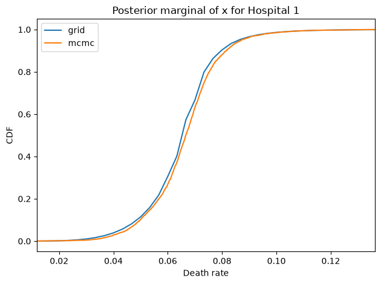
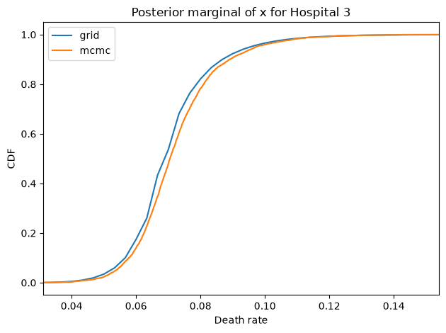
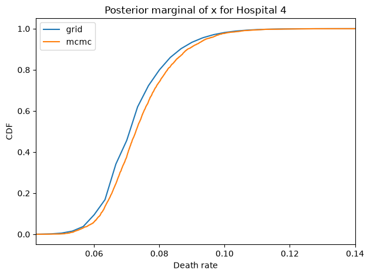
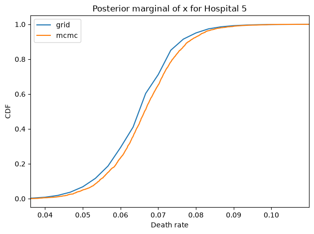
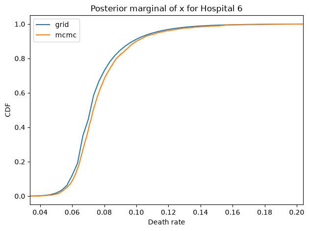
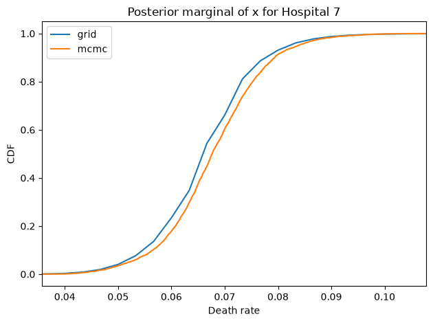
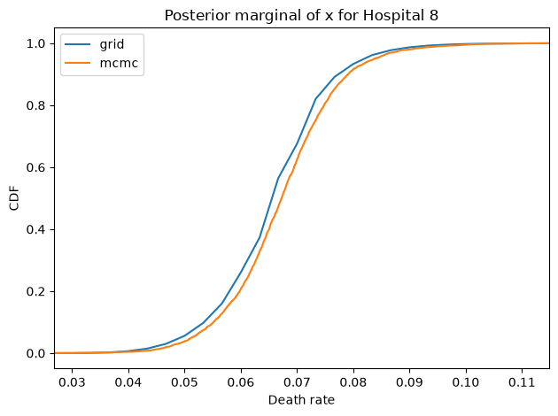
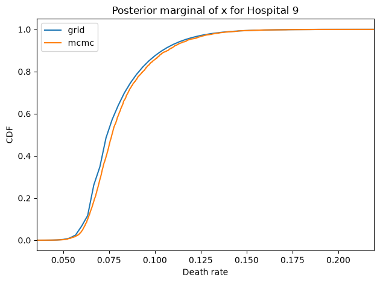
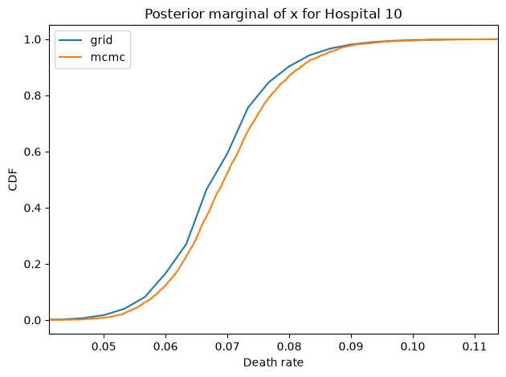
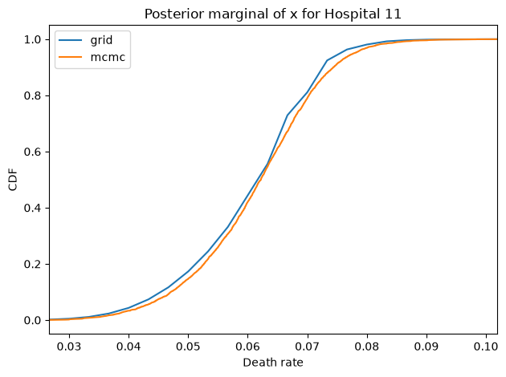
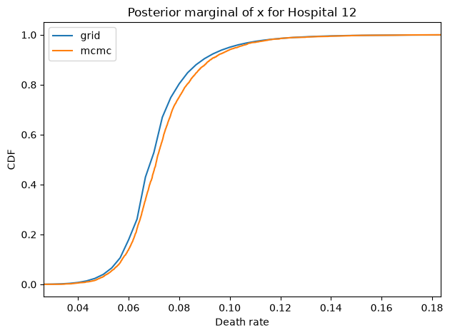
And here are the percentage differences between the results from the grid algorithm and PyMC. All of them are less than 1%, which is comparable to the Monte Carlo error in the PyMC results.
for i, ps in enumerate(marginal_xs):
pmf = Pmf(ps, xs)
diff = abs(pmf.mean() - float(post_xs[i].mean())) / pmf.mean()
print(f'{diff * 100:.2f}%')
0.40%
0.40%
0.07%
0.20%
0.54%
0.18%
0.82%
0.05%
0.03%
0.52%
0.13%
0.77%
0.85%
The cells above time the steps separately, and some of them – like the serial updates – are demonstrations rather than part of the final algorithm. So here is the whole thing in one function, starting from the grids and the data, to see what it actually costs.
def run_everything(ns, ks):
"""Run the parallel grid algorithm from scratch."""
M, S, X = np.meshgrid(mus, sigmas, xs, indexing='ij')
normpdf = np.exp(-((logit(X) - M) / S)**2 / 2) / (X * (1-X))
normpdf = divide(normpdf, normpdf.sum(axis=2, keepdims=True))
hyper_likelihood = np.array([get_hyper(normpdf * binom.pmf(k, n, xs))
for n, k in zip(ns, ks)])
numerator = prior_hyper * hyper_likelihood.prod(axis=0)
marginal_xs = np.zeros((len(ns), len(xs)))
for i, (n, k) in enumerate(zip(ns, ks)):
hyper_i = divide(numerator, hyper_likelihood[i])
posterior_i = normpdf * hyper_i.reshape(hyper_i.shape + (1,))
posterior_i = posterior_i * binom.pmf(k, n, xs)
marginal_xs[i] = marginal(posterior_i, 2)
return marginal_xs
%time marginal_xs = run_everything(data_ns, data_ks)
CPU times: user 388 ms, sys: 144 ms, total: 533 ms
Wall time: 534 ms
That’s about half a second, compared to a few seconds for PyMC to draw the samples – and PyMC used four cores, while the grid algorithm used one.
The margin is smaller than it was when I first wrote this notebook in 2021,
partly because PyMC has gotten faster, and partly because the grid for sigma
is finer than it was, to cover the range near 0.
But the conclusion is the same: for a model with this structure, the grid
algorithm is not just practical, it’s faster.
The grid algorithm is easy to parallelize, and it’s incremental. If you get data from a new hospital, or new data for an existing one, you can:
Compute the posterior distribution of
xfor the updated hospital, using existinghyper_likelihoodsfor the other hospitals.Update
hyper_likelihoodsfor the other hospitals, and run their updates again.
The total time would be about half of what it takes to start from scratch, and it’s easy to parallelize.
One drawback of the grid algorithm is that it generates marginal distributions for each hospital rather than a sample from the joint distribution of all of them. So it’s less easy to see the correlations among them.
The other drawback, in general, is that it takes more work to set up the grid algorithm. If we switch to another parameterization, it’s easier to change the PyMC model.
Copyright 2021 Allen B. Downey
License: Attribution-NonCommercial-ShareAlike 4.0 International (CC BY-NC-SA 4.0)